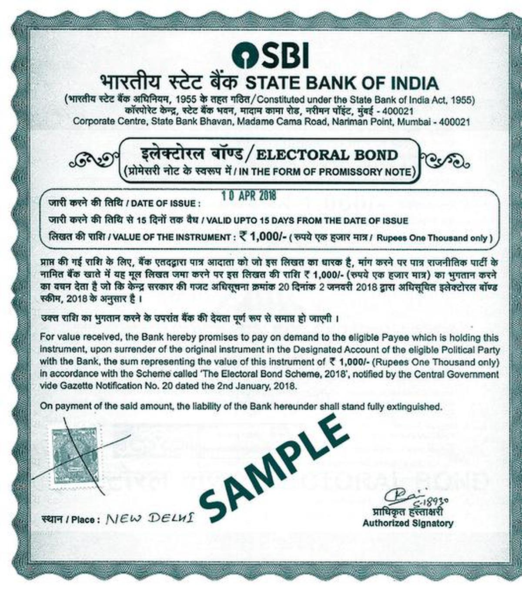

Understanding Electoral Bond
What are Electoral Bonds?
Here is an image of how electoral bond look like
Issuer: Electoral bonds are issued by notified banks, specifically authorized by the Reserve Bank of India (RBI) under the Electoral Bond Scheme, 2018. Denominations: Electoral bonds are issued in fixed denominations ranging from ₹1,000 to ₹1 crore (Indian Rupees). Eligibility: Any citizen of India or a body incorporated in India can purchase electoral bonds. Anonymity: One of the unique aspects of electoral bonds is the anonymity of the donor. The donor's identity is not disclosed to the recipient political party or made public. Validity and Redemption: Electoral bonds remain valid for 15 days from the date of issuance. They can be encashed only into the account of a political party registered under Section 29A of the Representation of the People Act, 1951. How Electoral Bonds Work: Purchase: Individuals or entities can purchase electoral bonds from specified branches of authorized banks during specified periods. Donation: The purchased electoral bonds can then be donated to registered political parties. The donor does not need to reveal their identity publicly. Redemption: Political parties can encash the electoral bonds within the specified validity period by depositing them into their designated bank account. Transparency and Reporting: While the donor's identity is anonymous, political parties are required to report the details of electoral bond donations to the Election Commission of India. This reporting includes the amount and number of electoral bonds received. 
How do Electoral Bonds Work?
Purchase: Electoral bonds can be purchased by any eligible Indian citizen or entity from specified branches of authorized banks.Donation: The purchased bonds can then be donated to registered political parties.
Anonymity: One of the key features of electoral bonds is that the identity of the donor remains anonymous to the public and the political party receiving the donation.
Key Features: Electoral bonds are available in certain denominations and are valid for a limited period. The bonds can only be encashed by registered political parties within a specified time frame.
Significance of Electoral Bonds
Creating a web page about electoral bonds involves providing informative content that explains what electoral bonds are, how they work, their significance, and any associated issues or controversies. Here's a suggested structure and content for your web page: Understanding Electoral Bonds What are Electoral Bonds? Electoral bonds are financial instruments introduced by the Government of India in 2018 as a means of making anonymous donations to political parties. These bonds were intended to promote transparency in political funding. How do Electoral Bonds Work? Purchase: Electoral bonds can be purchased by any eligible Indian citizen or entity from specified branches of authorized banks. Donation: The purchased bonds can then be donated to registered political parties. Anonymity: One of the key features of electoral bonds is that the identity of the donor remains anonymous to the public and the political party receiving the donation. Key Features: Electoral bonds are available in certain denominations and are valid for a limited period. The bonds can only be encashed by registered political parties within a specified time frame. Significance of Electoral Bonds Advantages: Transparency: Electoral bonds were introduced to bring transparency to political funding by reducing the use of cash donations. Legal Framework: They provide a legal route for individuals and organizations to contribute to political parties. Challenges: Anonymity Concerns: Critics argue that the anonymity of donors undermines transparency in political funding. Impact on Accountability: Some argue that electoral bonds could lead to increased corporate influence over political parties.
Following image is the comparision of party vs funds

You can view the data on official election commision of India website
Controversies and Debates Legal Challenges: Electoral bonds have faced legal challenges in India, with the Supreme Court hearing petitions questioning their validity and impact on transparency. Public Discourse: The use and impact of electoral bonds continue to be a subject of public debate and scrutiny, with stakeholders advocating for greater transparency and accountability.